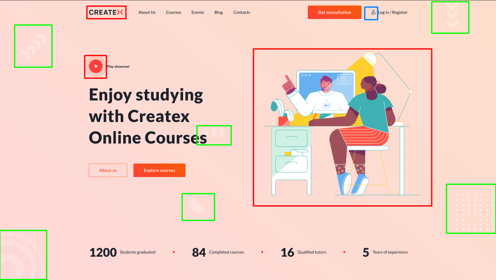
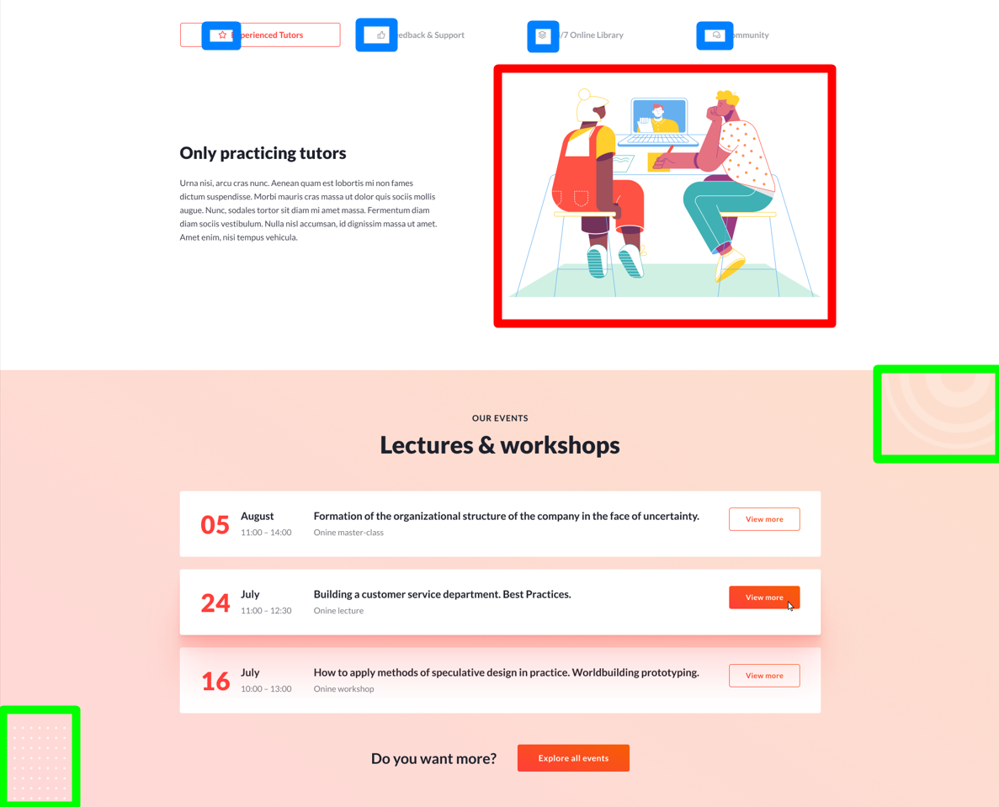
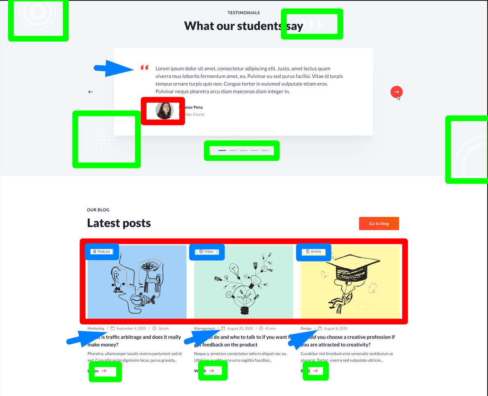
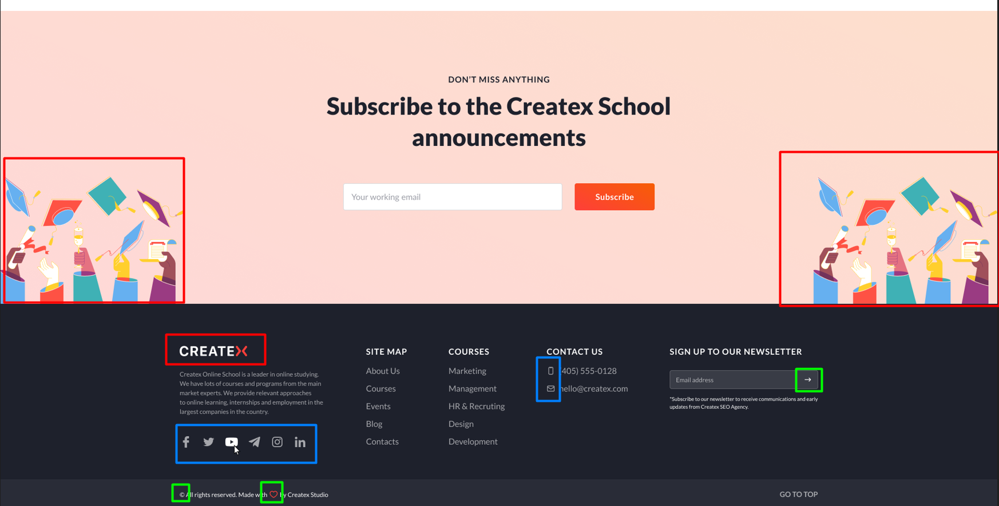

Категорії зображень:

- Контентні зображення
- Элементи дизайну
- Іконки
Формати зображень:

- jpeg(+ гарно оптимізується)
- png(- набагато важче файли + дозволяє робити напівпрозорі зображення)
Растрове-webp,jpeg,png
Векторне-svg
Формати:


- векторна графіка(чіткі лінії без полутонів)
- растрова графіка(при збільшенні якість падає, складається з пікселів)
Растрове+прозорість=png
Растрове+непрозорість=jpeg